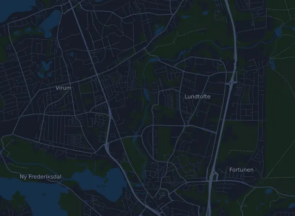

AL Sydbank Den Grønne Halvmaraton – halvmaraton 21 km
- Distance
- 21.1 km
- Elevation gain
- ↑ 141 m
- Highest point
- 56 m a.s.l.
- Surface
- Road
- Profile
- Gently rolling
- Start
- 10:30
- Aid stations
- 4
Elevation profile
Prepare with Mila
Mila is a running coach app. Add a race to your plan and the coach plans your weeks up to race day around your form, and gives you a finish-time forecast and a plan for pacing, drinks and fuel on the course.

The right run, on the right day.
The course

About the course
The AL Sydbank Den Grønne Halvmaraton – halvmaraton is a 21.1 km road race in Kongens Lyngby, Denmark, with 141 m of climbing and 142 m of descent between a low point of 13 m and a high point of 56 m above sea level. The first climb starts almost at once: from km 0.2 you rise 25 m over about 1.6 km at 1.6% on average, up to 48 m. The second is longer and gentler, starting at km 6.3 and climbing 35 m over roughly 3.9 km at 0.9%, to the course's highest point at 56 m around km 10. Water is available at km 4, 9.5, 14.5 and 19.5.
Because the first climb comes so early, start with restraint, while your legs are still waking up, so you don't spend energy before the race has settled. The long, gradual rise through the middle rewards an even effort rather than chasing pace. That leaves you something for the second half.
This description is written by Mila’s coach with the help of AI, from the facts in Mila’s race register.
Climbs
| Starts at | Length | Gain | Gradient | Top (m above sea level) |
|---|---|---|---|---|
| km 0.2 | 1.6 km | 25 m | 1.6 % | 48 |
| km 6.3 | 3.9 km | 35 m | 0.9 % | 56 |
Before the start
Aid stations
| At | What's there |
|---|---|
| km 4.0 | water |
| km 9.5 | water |
| km 14.5 | water |
| km 19.5 | water |
Start times
- 10:30
Source: groennehalvmaraton.dk, retrieved 25 November 2026
Pace table
AL Sydbank Den Grønne Halvmaraton – halvmaraton 21 km in 1:30:00 – pace per km and splits
4:16 per km · km 5: 21:20 · km 10: 42:39 · km 15: 1:03:59 · finish: 1:30:00
AL Sydbank Den Grønne Halvmaraton – halvmaraton 21 km in 1:45:00 – pace per km and splits
4:59 per km · km 5: 24:53 · km 10: 49:46 · km 15: 1:14:39 · finish: 1:45:00
AL Sydbank Den Grønne Halvmaraton – halvmaraton 21 km in 2:00:00 – pace per km and splits
5:41 per km · km 5: 28:26 · km 10: 56:52 · km 15: 1:25:18 · finish: 2:00:00
AL Sydbank Den Grønne Halvmaraton – halvmaraton 21 km in 2:15:00 – pace per km and splits
6:24 per km · km 5: 31:59 · km 10: 1:03:59 · km 15: 1:35:58 · finish: 2:15:00
The times assume an even pace the whole way. This is plain arithmetic, not a forecast: on climbs, in crowds and at aid stations the pace varies.
Frequently asked questions
When is AL Sydbank Den Grønne Halvmaraton – halvmaraton 21 km?
AL Sydbank Den Grønne Halvmaraton – halvmaraton 21 km takes place on Sunday, 25 April 2027. Check the date and start time with the organizer.
What time does AL Sydbank Den Grønne Halvmaraton – halvmaraton 21 km start?
According to the organizer: 10:30.
How long is AL Sydbank Den Grønne Halvmaraton – halvmaraton 21 km and how much climbing is there?
The race is 21.1 km with 141 m of climbing and 142 m of descent. The highest point is 56 m above sea level.
What is the course of AL Sydbank Den Grønne Halvmaraton – halvmaraton 21 km like?
The course is gently rolling, with 6.7 m of climbing per km on average. It has 2 climbs of at least 25 m; the biggest starts at km 6.3: 35 m over 3.9 km. Start and finish are in the same place. The surface is road.
Are there aid stations at AL Sydbank Den Grønne Halvmaraton – halvmaraton 21 km?
Yes. The organizer lists 4 aid stations: km 4.0 (water); km 9.5 (water); km 14.5 (water); km 19.5 (water).
How should I pace AL Sydbank Den Grønne Halvmaraton – halvmaraton 21 km?
Aim for an even effort rather than an even pace: let the pace drop on the climbs, win it back where it levels out, and hold back in the first kilometres. The biggest climbs start at km 0.2 and km 6.3. In Mila you get a pace plan for this course, based on your own form.
More races like this
More races nearby
- Lillebælt Halvmarathon 21 km8 May 2027 · Middelfart, Denmark
- Copenhagen Marathon 42.2 km9 May 2027 · København, Denmark
- The Royal Copenhagen City Half 21 km11 April 2027 · København (Nordhavn), Denmark
- Royal Run København/Frederiksberg – 10 km17 May 2027 · København, Denmark
- Royal Run Silkeborg – 10 km17 May 2027 · Silkeborg, Denmark
- Aalborg Brutal Marathon – Marathon 42.2 km26 March 2027 · Aalborg, Denmark
Prepare with Mila
The right run, on the right day.
Details come from the course file and the organizer's information. Check the date, start times and rules with the organizer.
Mila is not affiliated with, sponsored by or endorsed by the organizer or the race's sponsors. Names and trademarks belong to their owners. Organizer or rights holder? Ask for a change or a removal